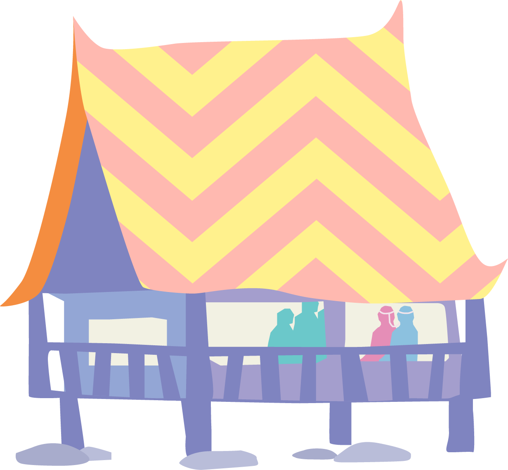
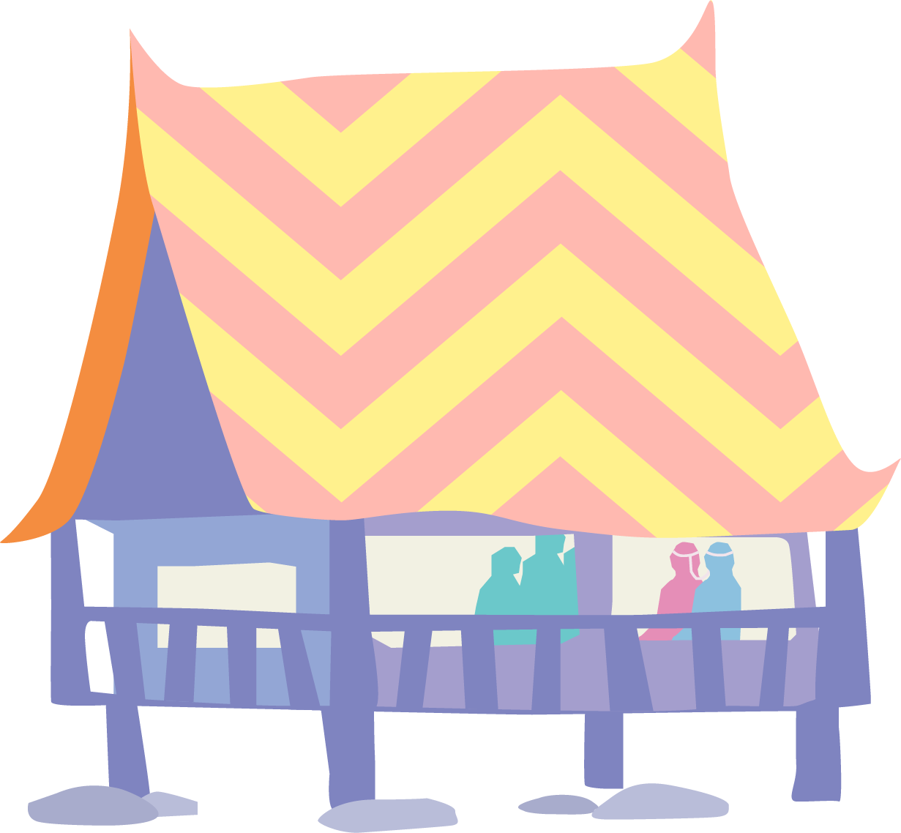
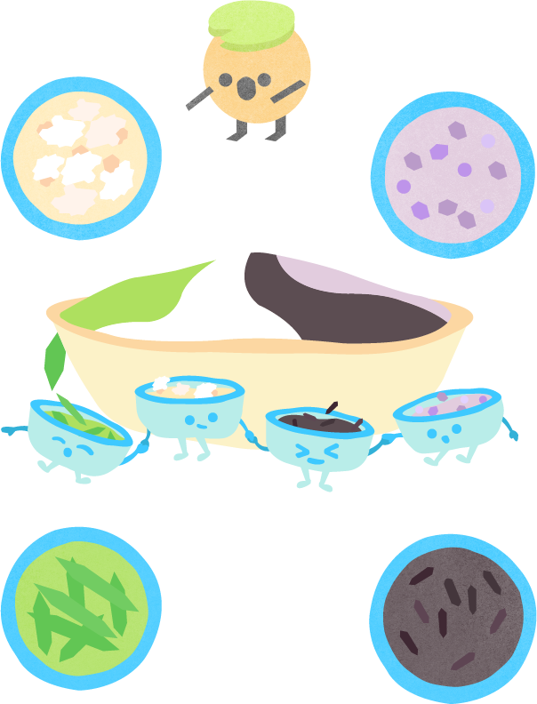
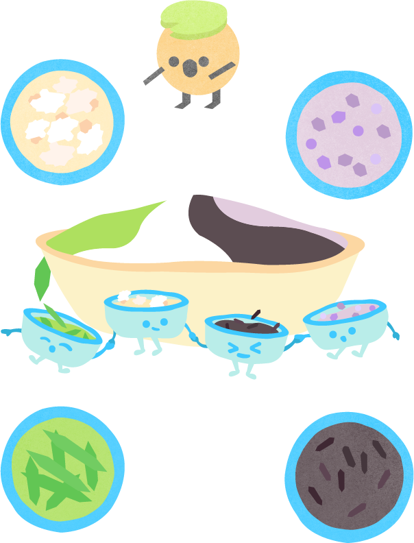

ขนมกินสี่ถ้วย

การกินสี่ถ้วยยังเป็นพิธีกรรมแต่งงานที่มีอยู่ใน
แผ่นดินพระร่วงที่มีการสืบทอดการกินสี่ถ้วยมา
ตั้งแต่ยุคสุโขทัย ซึ่งในปัจจุบันมีเช่นกันแต่พบได้
น้อยมาก ส่วนมากพบบริเวณโดยรอบสุโขทัย อย่าง
จังหวัดเพชรบูรณ์ จังหวัดอุตรดิตถ์เป็นต้น
เมื่อครั้งสมัยสุโขทัยผู้คนในแผ่นดินเดิม ก่อนที่จะ
มีการนับถือพระพุทธศาสนา มีความเชื่อเกี่ยวกับ
ประเพณีการแต่งงาน คือ การเลี้ยงผีบรรพบุรุษ
ของ 2 ตระกูลด้วยของเซ่นไหว้ 4 เตียบ เพื่อให้เป็น
ทองแผ่นเดียวกันโดยสมบูรณ์เรียกประเพณีนี้ว่า
"กินสี่ถ้วย.

 



ประเพณีแต่โบราณ
"พิธีไหว้บรรพบุรุษ"
โบราณมีความเชื่อว่า ที่อยู่อาศัยนั้นมีผีบ้าน
ผีเรือน อีกทั้งเชื่อว่าบรรพบุรุษอันได้แก่ ปู่ย่าตายาย
ยังคอยคุ้มครองดูแลถ้าจะทำการใด ๆ จะต้องบอก
กล่าวเป็นการขอขมาลาโทษหรือให้รับรู้ว่ามีบุคคลอื่น
มาเป็นเขย มาเป็นสะใภ้ จึงจัดพิธีไหว้ผีโดยนำสิ่งของ
มาเส้นบวงสรวง ได้แก่ กินสี่ถ้วยนั่นเอง

ตามความเชื่อที่ว่าเลี้ยงผีต้องใช้ 4
ถ้วย ดังนั้นการจัดสำรับ อาหาร
จึงทำเป็น 5 ถ้วยเพื่อให้คนกิน
โห ถ้วยเยอะจัง

ความหมายก็ต่างกันนะ

วัตถุดิบ
มะลิลอย
ข้าวตอก
นกปล่อย
ลอดช่อง
ไข่กบ
เม็ดแมงลัก
ข้าวตื้อ
ข้าวเหนียวดำ
ว้าวววววววววววว
มะลิลอยหมายถึงความรักเบ่งบาน
ไข่กบหมายถึงมีลูกเต็มบ้าน
มีหลานเต็มเมือง
นกปล่อยหมายถึงความรักยืนยาว
อ้ายตื้อหมายถึงรักแน่นเหนียว

ทำไมถึง
เริ่มเลือนลาง
ด้วยยุคสมัยที่มีการแต่งงานเน้น
ประเพณีแบบชาติตะวันตกมากขึ้น
อีกทั้งการทำขนมนั้นมักมาคู่กับ
การเตรียมเครื่องเซ่นชนิดอื่น
การเตรียมการจึงยิ่งทวีความยาก


หน้าแรก
ยุคสุโขทัย
ยุคอยุธยา
ยุครัตนโกสินทร์
หน้าปิด


 
